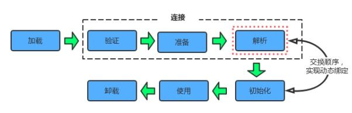

类从被加载到虚拟机内存中开始，到卸载出内存为止，它的整个生命周期包括以下7个阶段：
其中前五个阶段即为类加载的全过程。在后面会进行详细的介绍。而验证、准备、解析3个部分统称为连接（Linking）。这7个阶段的发生顺序如下图：

在上图中，加载、验证、准备、初始化和卸载这5个阶段的顺序是确定的，类的加载过程必须按照这种顺序按部就班地开始（开始而不是完成，这些阶段是互相交叉着进行的，在一个阶段执行过程中就会激活另一个阶段），而解析阶段则不一定：它在某些情况下可以在初始化阶段之后再开始，这是为了支持Java的运行时绑定（也称为动态绑定或晚期绑定）。
对于类加载过程的第一个阶段：加载，jvm规范中并没有进行强制约束其开始时机，可交由jvm的具体实现来自由把握。但是对于初始化阶段，jvm规范严格规定了有且只有下列5种情况必须对类进行“初始化”（很自然地，加载、验证、准备需要在此之前开始）：
new、getstatic、putstatic、invokestatic这四条字节码指令时，如果类没有进行过初始化，则必须先触发其初始化。最常见的生成这4条指令的场景是：使用new关键字实例化对象的时候；读取或设置一个类的静态字段（被final修饰、已在编译期把结果放入常量池的静态字段除外）的时候；以及调用一个类的静态方法的时候。java.lang.reflect包的方法对类进行反射调用的时候，如果类没有进行初始化，则需要先触发其初始化。java.lang.invoke.MethodHandle实例最后的解析结果REF_getStatic, REF_putStatic, REF_invokeStatic 的方法句柄，并且这个方法句柄所对应的类没有进行过初始化，则需要先触发其初始化；以上5种场景中的行为称为对一个类进行主动引用。除此之外，所有引用类的方式都不会触发初始化，称为被动引用。被动引用的常见例子包括：
SuperClass[] sca = new SuperClass[10];。接口的加载过程和类加载过程略有不同，它们真正的区别在于在前文提到的5种需要开始初始化场景中的第3种：当一个类在初始化时，要求其父类全部都已经初始化过了，但是一个接口在初始化时，并不要求其父接口全部都完成了初始化，只有在真正使用到父接口的时候（如引用接口中定义的常量）才会初始化。
加载是类加载（Class Loading）过程的一个阶段，两者不要混淆。虚拟机规范规定了在在加载阶段，jvm需要完成以下三件事情：
java.lang.Class对象，作为方法区这个类的各种数据的访问入口。这三点要求不算具体，在jvm实现时灵活度很大。例如上面的第一条，它没有指明二进制字节流要从一个Class文件中获取，准确地说没有指明要从哪里获取、怎样获取。这也为许多Java技术提供了基础，例如：
java.lang.reflect.Proxy中，就是用了ProxyGenerator.generateProxyClass的代理类的二进制字节流。非数组类的加载
相对于类加载过程的其他阶段，一个非数组类的加载阶段（准确地说，是加载阶段中获取类的二进制字节流的动作）是开发人员可控性最强的，因为加载阶段既可以使用系统提供的引导类加载器完成，也可以由用户自定义的类加载器完成，通过自定义类加载器去控制字节流的获取方式，即重写一个类加载器的loadClass()方法。关于类加载器的内容将在系列的下一篇文章中介绍。
数组类的加载
数组类本身不通过类加载器创建，它是由jvm直接创建的。但数组类的元素类型（Element Type，指的是数组去掉所有维度的类型）最终是要靠类加载器去创建，一个数据类C的创建过程遵循以下规则：
加载阶段完成后，虚拟机外部的二进制字节流就按照虚拟机所需的格式存储在方法区之中，方法区的数据存储格式由虚拟机实现自行定义，虚拟机规范未规定此区域的具体数据结构。然后在内存中实例化一个java.lang.Class类的对象（并无明确规定是在Java 堆中，对于HotSpot虚拟机而言，Class对象比较特殊，它虽是对象，但存放在方法区里），这个对象将作为程序访问方法区中的这些类型数据的外部接口。
验证是连接阶段的第一步，这一阶段的目的是确保输入的Class文件的字节流能正确地解析并存储于方法区之内，格式上符合描述一个Java类型信息的要求，并且不会危害虚拟机自身的安全。验证阶段是否严谨，直接决定了Java虚拟机是否能承受恶意代码的攻击。 从整体上看，验证阶段大致上会完成下面四个阶段的检验动作：文件格式验证、元数据验证、字节码验证、符号引用验证。
1. 文件格式验证
第一阶段要验证字节流是否符合Class文件格式的规范，并且能被当前版本的虚拟机处理。这一阶段可能包括下面这些验证点：
这阶段的验证是基于二进制字节流进行的，只有通过了这个阶段的验证后，字节流才会进入方法区中进行存储，所以后面的3个验证阶段全部是基于方法区的存储结构进行的，不会再直接操作字节流。
2. 元数据验证
第二阶段是对字节码描述的信息（即类的元数据信息）进行语义分析，以保证其描述的信息符合Java语言规范的要求。例如下面这些验证点：
java.lang.Object之外，所有的类都应有父类）该阶段的主要目的是对类的元数据信息进行语义检验，保证不存在不符合Java语言规范的元数据信息。
3. 字节码验证
第三阶段的主要目的是进行数据流和控制流分析，确定程序语义是合法的、符合逻辑的。在第二阶段对元数据信息中的数据类型做完校验之后，这个阶段将对类的方法体进行校验分析，以保证被校验类的方法在运行时不会做出危害虚拟机安全的行为。例如：
4. 符号引用验证
最后一个阶段的校验发生在虚拟机将符号引用转化为直接引用的时候，这个转化动作将在连接的第三阶段——解析阶段中发生。符号引用验证可以看做是对类自身以外（常量池中的各种符号引用）的信息进行匹配性校验，通常需要校验下列内容：
符号引用的目的是确保解析动作能正常执行。
对于jvm的类加载机制来说，验证阶段是一个非常重要但不是一定必要（因为对运行期没有影响）的阶段。如果所运行的全部代码都已经被反复验证过，那么在实施阶段就可以考虑使用`-Xverify:none`参数来关闭大部分的类验证措施，以缩短虚拟机类加载的时间。
准备阶段的主要任务是如下两点：
这些变量所使用的内存都将在方法区中分配。
首先，在准备阶段进行内存分配的仅包括类变量（被static修饰的变量），而不包括实例变量，实例变量将会在对象实例化时随着对象一起分配在Java堆中。
其次，这里所说的初始值“通常情况”下是数据类型的零值，假设一个类变量的定义为：
public static int value = 123;
那变量value在准备阶段过后的初始值为0而不是123，因为这时候尚未开始执行任何Java方法，而把value赋值为123的putstatic指令是程序被编译后，存放于类构造器<clinit>()方法之中，所以把value赋值为123的动作在初始化阶段才会执行。 值得注意的是，如果类字段的字段属性中存在ConstantValue属性，那在准备阶段变量value就会被初始化为ConstantValue属性所指定的值，假设上面类变量value的定义变为：
public static final int value = 123;
编译时Javac将会为value生成ConstantValue属性，在准备阶段虚拟机就会根据ConstantValue的设置将value赋值为123。
解析阶段是虚拟机将常量池内的符号引用替换为直接引用的过程。符号引用和直接引用的关联如下：
虚拟机规范并未规定解析动作发生的具体时间，仅要求在执行anewarray、checkcast、getfield、getstatic、instanceof、invokeinterface、invokespecial、invokestatic、invokevirtual、multianewarray、new、putfield和putstatic这13个用于操作符号引用的字节码指令之前，先对它们所使用的符号引用进行解析。所以虚拟机实现可以根据需要来判断到底是在类被加载器加载时就对常量池中的符号进行解析，还是等到一个符号引用将要被使用前才去解析它。
对同一个符号引用进行多次解析请求是很常见的，除 invokedynamic 指令外（ invokedynamic指令是用于动态语言支持的，它所对应的引用称为“动态调用点限定符”，必须等到程序实际运行到这条指令的时候，解析动作才能进行）虚拟机实现可能会对第一次解析的结果进行缓存（将直接引用保存在运行时常量池中），无论是否真正执行了多次解析动作，虚拟机实现必须保证在同一个实体中，如果一个符号引用之前已经被成功解析过，后续的引用解析请求就应当一直成功，反之亦然。
解析动作主要针对以下7类符号引用
其中后三种与java的动态语言支持息息相关。
类初始化阶段是“类加载过程”中最后一步，在之前的阶段，除了在加载阶段用户应用程序可以通过自定义类加载器参与之外，其它动作完全由虚拟机主导和控制，直到初始化阶段，才真正开始执行类中定义的Java程序代码（或者说是字节码）。
在准备阶段，变量已经赋过一次系统要求的初始值，而在初始化阶段，根据程序员通过程序制定的主观计划去初始化类变量和其它资源，简单说，初始化阶段即虚拟机执行类构造器<clinit>()方法的过程。
下面来详细讲解<clinit>()方法是怎么生成的，首先来了解此方法执行过程中可能会影响到程序运行行为的特点和细节：
<clinit>()方法是由编译器自动收集类中所有类变量的赋值动作和静态语句块（static{} 块）中的语句合并产生的，编译器收集的顺序由语句在源文件中出现的顺序决定，特别注意的是，静态语句块只能访问到定义在它之前的类变量，定义在它之后的类变量只能赋值，不能访问。例如以下代码：public class Test {
static {
i = 0; // 给变量复制可以正常编译通过
System.out.print(i); // 这句编译器会提示“非法向前引用”
}
static int i = 1;
}
<clinit>()方法与类的构造函数（或者说实例构造器<init>() 方法）不同，不需要显式的调用父类的()方法。虚拟机会自动保证在子类的<clinit>()方法运行之前，父类的<clinit>()方法已经执行结束。因此虚拟机中第一个执行<clinit>()方法的类肯定为java.lang.Object。<clinit>()方法先执行，也就意味着父类中定义的静态语句块要优于子类的变量赋值操作。例如以下代码：static class Parent {
public static int A = 1;
static {
A = 2;
}
}
static class Sub extends Parent {
public static int B = A;
}
public static void main(String[] args) {
System.out.println(Sub.B);//输出结果是父类中的静态变量值A，也就是2
}
1.<clinit>()方法对于类或接口不是必须的，如果一个类中不包含静态语句块，也没有对类变量的赋值操作，编译器可以不为该类生成<clinit>()方法。
2.接口中不可以使用静态语句块，但仍然有类变量初始化的赋值操作，因此接口与类一样都会生成<clinit>()方法。但接口与类不同的是，执行接口的<clinit>()方法不需要先执行父接口的<clinit>()方法。只有当父接口中定义的变量使用时，父接口才会初始化。另外，接口的实现类在初始化时也一样不会执行接口的<clinit>()方法。虚拟机会保证
3.一个类的<clinit>()方法在多线程环境下被正确的加锁和同步，如果多个线程同时初始化一个类，只会有一个线程执行这个类的<clinit>()方法，其它线程都会阻塞等待，直到活动线程执行<clinit>()方法完毕。如果在一个类的<clinit>()方法中有耗时的操作，就可能造成多个进程阻塞，在实际过程中此种阻塞很隐蔽。
本人免费整理了Java高级资料，涵盖了Java、Redis、MongoDB、MySQL、Zookeeper、Spring Cloud、Dubbo高并发分布式等教程，一共30G，需要自己领取。
传送门：https://mp.weixin.qq.com/s/JzddfH-7yNudmkjT0IRL8Q